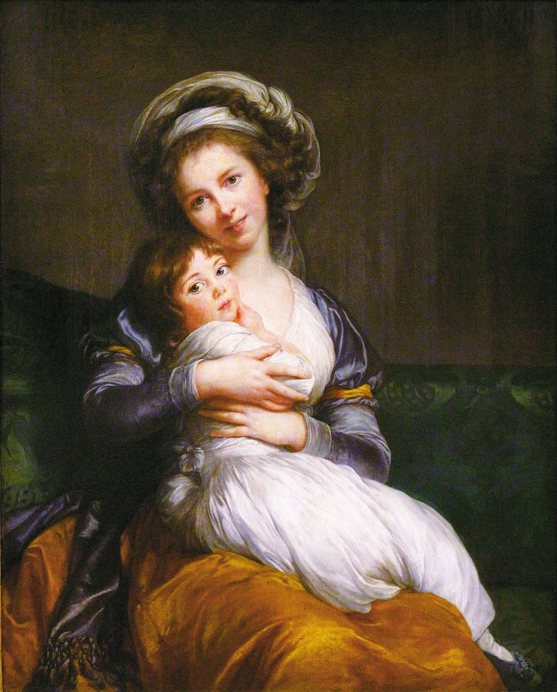

<head>
<meta charset="UTF-8" />
<meta name="keywords" content="drawing, painting" />
<meta name="description" content="drawings by Sunjy" />
<title>Sunjy</title>
<link rel="shortcut icon" type="image/x-icon" href="../../mImages/mCommon/favicon.ico" media="screen" />
<link rel="stylesheet" type="text/css" href="../../mCsses/mCommon/mCssA.css" />
<link rel="stylesheet" type="text/css" href="../../mCsses/mCommon/mCssB.css" />
<link rel="stylesheet" type="text/css" href="../../mCsses/mCommon/mCssC.css" />
<link rel="stylesheet" type="text/css" href="../../mCsses/mCommon/mCssD.css" />
<link rel="stylesheet" type="text/css" href="../../mCsses/mContent/mCssA.css" />
<link rel="stylesheet" type="text/css" href="../../mCsses/mContent/mCssB.css" />
<link rel="stylesheet" type="text/css" href="../../mCsses/mContent/mCssC.css" />
<link rel="stylesheet" type="text/css" href="../../mCsses/mContent/mCssD.css" />
</head>
<script type="text/javascript" src="../../mScripts/mContent/mContentAA.js" /></script>
<script type="text/javascript" src="../../mScripts/mContent/mContentAB.js" /></script>
<script type="text/javascript" src="../../mScripts/mContent/mContentAC.js" /></script>
<script type="text/javascript" src="../../mScripts/mContent/mContentAD.js" /></script>
<script type="text/javascript"></script> 
<script type="text/javascript">
document.write('<div class="mImgAbsolute"></div>');
/*
document.write('<p class="mFontSizeBColor" />From a white paper...</p>');
document.write('<table class="center"><tr><td>');
document.write('');
document.write('</td></tr></table>');
*/
</script>


<script type="text/javascript">
document.write('<p class="mFontSizeBColor" />Self-portrait with Her Daughter</p>');
document.write('<p class="mFontSizeSColor" />“Self-portrait with Her Daughter, Julie” by Louise Élisabeth Vigée Le Brun portrays the prominent French portrait painter who was a friend and favorite artist of Marie Antoinette. In 1780, Vigée-Le Brun gave birth to a daughter, Jeanne Julie Louise, whom she called Julie. In 1787, she caused a public scandal when this painting was exhibited at the Salon because she was shown smiling open-mouthed, which was in contravention of conventions going back to antiquity.<br><br>The court gossip-sheet Mémoires secrets commented:<br><br>“An affectation which artists, art-lovers and persons of taste have been united in condemning, and which finds no precedent among the Ancients, is that in smiling, [Madame Vigée LeBrun] shows her teeth.”<br><br>Fortunately, Madame Vigée LeBrun’s career blossomed when Marie Antoinette granted her patronage. She painted more than 30 paintings of the queen and her family but was forced to flee the country after the arrest of the royal family during the French Revolution. After fleeing France in 1789, LeBrun lived and worked in the major European capitals. She enjoyed the patronage of European aristocrats, actors, and writers. She was also elected to art academies in ten cities. Her artistic style was part of the aftermath of Rococo, while she also adopted a neoclassical style. Her color palette was Rococo influenced, but her style assumed the emerging Neoclassicism.<br><br>Vigée Le Brun left a legacy of some 660 portraits and 200 landscapes, and when she was in her eighties, she published her memoirs in three volumes, called Souvenirs.<br></p>');
document.write('<table class="center" /><tr><td>');
document.write('<br>The court gossip-sheet Mémoires secrets commented:<br><br>“An affectation which artists, art-lovers and persons of taste have been united in condemning, and which finds no precedent among the Ancients, is that in smiling, [Madame Vigée LeBrun] shows her teeth.”<br><br>Fortunately, Madame Vigée LeBrun’s career blossomed when Marie Antoinette granted her patronage. She painted more than 30 paintings of the queen and her family but was forced to flee the country after the arrest of the royal family during the French Revolution. After fleeing France in 1789, LeBrun lived and worked in the major European capitals. She enjoyed the patronage of European aristocrats, actors, and writers. She was also elected to art academies in ten cities. Her artistic style was part of the aftermath of Rococo, while she also adopted a neoclassical style. Her color palette was Rococo influenced, but her style assumed the emerging Neoclassicism.<br><br>Vigée Le Brun left a legacy of some 660 portraits and 200 landscapes, and when she was in her eighties, she published her memoirs in three volumes, called Souvenirs.<br>" />');
document.write('</td></tr></table>');
</script>


